Spatial regression
Jes & Marissa
Assigned Reading:
Chapters 6 & 7 from: Zuur, A. F., Ieno, E. N., Walker, N., Saveliev, A. A. and Smith, G. M. 2009. Mixed Effects Models and Extensions in Ecology with R. Springer. link
Optional Readings:
Beale, C. M., Lennon, J. J., Yearsley, J. M., Brewer, M. J. and Elston, D. A. 2010. Regression analysis of spatial data. Ecology Letters 13: 246-264. DOI: 10.1111/j.1461-0248.2009.01422.x
Hawkins, B. A. 2012. Eight (and a half) deadly sins of spatial analysis. Journal of Biogeography 39: 1-9. DOI: 10.1111/j.1365-2699.2011.02637.x
Key Points
General ideas
Spatial and temporal autocorrelation can be problematic because they violate the assumption that the residuals in regression are independent, which causes estimated standard errors of parameters to be biased and causes parametric statistics no longer follow their expected distributions (i.e. p-values are too low).
Spatial dependence can be induced by both extrinsic and intrisic factors.
- Spatial dependence can be modeled in many ways (see Table 2 in Beale et al. 2010) but we will talk about:
- GLS: spatial dependence modeled by fitting a parametric model to the residuals
- Spatial filters (PCNM or MEM): spatial structure extracted using ordination of locations and spatial eigenvectors included as covariates
Definitions
stationarity : when the mean, variance and correlation structure do not vary across time or space. We assume stationarity in the residuals of regression models.
isotropy : when a process does not vary with direction (only with distance)
lag : the number of steps or links that separate two observations (an integer). For example, the lag between observations sampled in June and August would be 2, if samples are collected once a month, but it would be 1, if samples are collected every other month.
autocorrelation function : a function that gives the correlation between two observations as a function of the lag between them. Note: acf() takes a series of values and assumes that adjacent values are separated by a lag of 1.
variogram : a function that gives the variance between two observations as a function of the distance between them. A semi-variogram gives 1/2 of the variance (semivariance) and is usually what is given by stats programs. Note: variograms are parametric functions, whereas empirical variograms are estimated from data by grouping observations into short windows of the distance between them.
- sill : the asymptotic value of the variance
- range : the distance at which the variance reaches the asymptote
- nugget : the variance between observations separated by a distance of zero (e.g. variance upon re-sampling)
How to determine whether you should incorporate autocorrelation in a regression model
- Fit a model without autocorrelation.
- Plot the residuals vs. the covariates along which you expect autocorrelation (e.g. time, x-y coordinates).
- Plot the correlation among residuals vs. the distance between them. This could be the autocorrelation function, empirical variogram, or Moran’s I at different distances (see Friday’s reading).
- Compare models that do and do not model the autocorrelation structure using AIC or other information criteria.
Functions for modeling residual correlation structure
| Name | correlation = argument in gls() |
Explanation |
|---|---|---|
| compound symmetry | corCompSym(form =~ x) |
The residual correlation is the same among all observations regardless of the distance between them. |
| autoregressive order 1 (AR-1) | corAR1(form =~ x) |
The residual correlation is the same (\(\rho\)) between all observations separated by a lag of 1 and the residual correlation between observations separated by a lag of \(n\) is \(\rho^n\). |
| autoregressive moving average ARMA(p,q) | corARMA(start_p, start_q, p, q) |
An observation is a linear function of other observations with separate coeffients estimated for lags of \(1\) to \(p\) plus a linear function of the error of other observations with separate coefficients estimated for lags of \(1\) to \(a\) (effectively a more flexible model) |
| exponential correlation | corExp(form =~ x + y) |
parametric model of the semi-variogram |
| Gaussian correlation | corGaus(form =~ x + y) |
parametric model of the semi-variogram |
| linear correlation | corLin(form =~ x + y) |
parametric model of the semi-variogram |
| rational quadratic correlation | corRatio( form =~ x + y) |
parametric model of the semi-variogram |
| spherical correlation | corSpher( form =~ x + y) |
parametric model of the semi-variogram |
Note:
- The variogram models are parametrized by their sill, range, and nugget.
- In the variogram models, distances are by default Euclidean (\(\sqrt{x^2 + y^2}\)) so you should not use latitude and longitude. UTM coordinates can be used instead since they are in meters.
- If using a random-effects model, be sure to apply the correlation structure at the deepest level within groups so that the correlation between groups is zero. Do this using
form =~ x | group.
Analysis Example
# load libraries and data
library(plyr)
library(dplyr)## Warning: package 'dplyr' was built under R version 3.3.3##
## Attaching package: 'dplyr'## The following objects are masked from 'package:plyr':
##
## arrange, count, desc, failwith, id, mutate, rename, summarise,
## summarize## The following objects are masked from 'package:stats':
##
## filter, lag## The following objects are masked from 'package:base':
##
## intersect, setdiff, setequal, unionlibrary(rgdal)## Warning: package 'rgdal' was built under R version 3.3.3## Loading required package: sp## Warning: package 'sp' was built under R version 3.3.3## rgdal: version: 1.2-13, (SVN revision 686)
## Geospatial Data Abstraction Library extensions to R successfully loaded
## Loaded GDAL runtime: GDAL 2.2.0, released 2017/04/28
## Path to GDAL shared files: C:/Program Files/R/R-3.3.1/library/rgdal/gdal
## Loaded PROJ.4 runtime: Rel. 4.9.3, 15 August 2016, [PJ_VERSION: 493]
## Path to PROJ.4 shared files: C:/Program Files/R/R-3.3.1/library/rgdal/proj
## Linking to sp version: 1.2-5library(magrittr)
AmazonasShape <- readOGR("data/am_municipios/13MUE250GC_SIR.shp")## OGR data source with driver: ESRI Shapefile
## Source: "data/am_municipios/13MUE250GC_SIR.shp", layer: "13MUE250GC_SIR"
## with 62 features
## It has 3 fields
## Integer64 fields read as strings: IDYFcases = read.csv("data/cleanedYFV_enviro.csv") %>%
mutate(code = as.character(code))## Warning: package 'bindrcpp' was built under R version 3.3.3Data Visualization
plot(AmazonasShape)
points(YFcases$x, YFcases$y, col = ifelse(YFcases$YFV > 0, "red", "black"), pch = 16)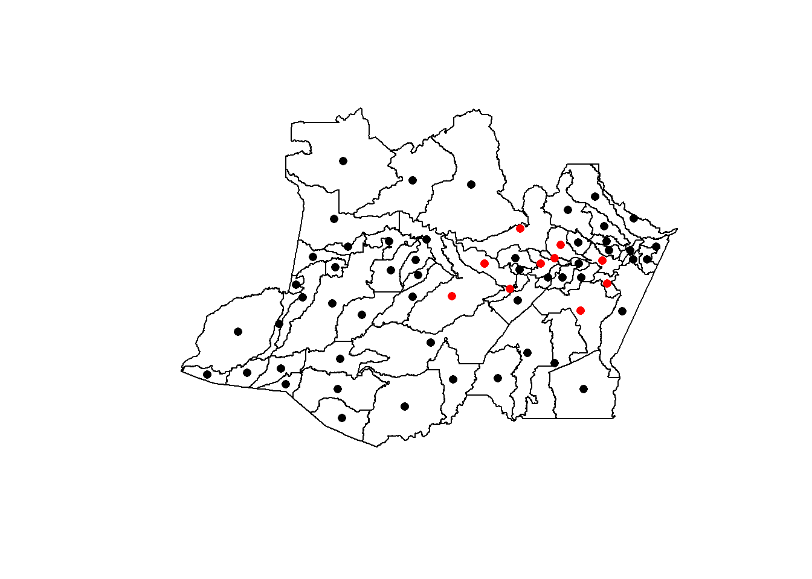
AmazonasShape@data %<>% left_join(YFcases, by = c("CD_GEOCODM" = "code"))## Warning: Column `CD_GEOCODM`/`code` joining factor and character vector,
## coercing into character vectorspplot(AmazonasShape, "percent_forest", main = "Percent Forest Cover")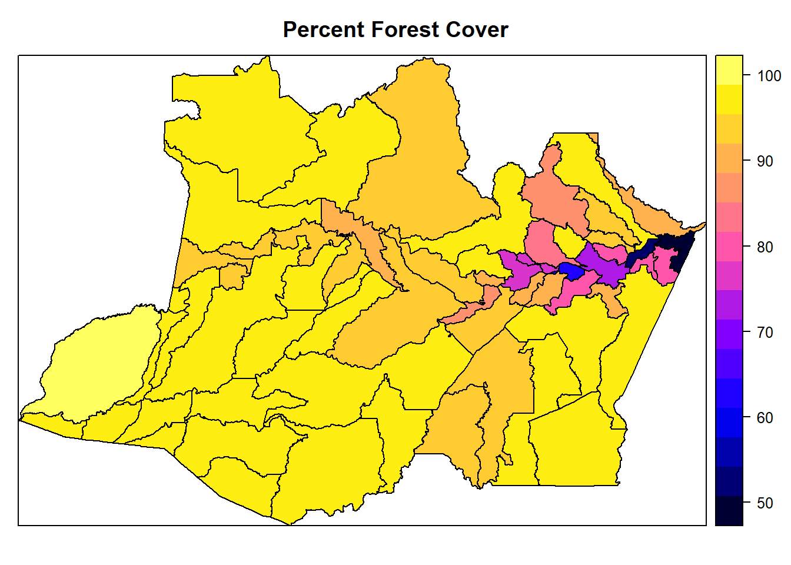
spplot(AmazonasShape, "percent_forest_loss", main = "Percent Forest Loss")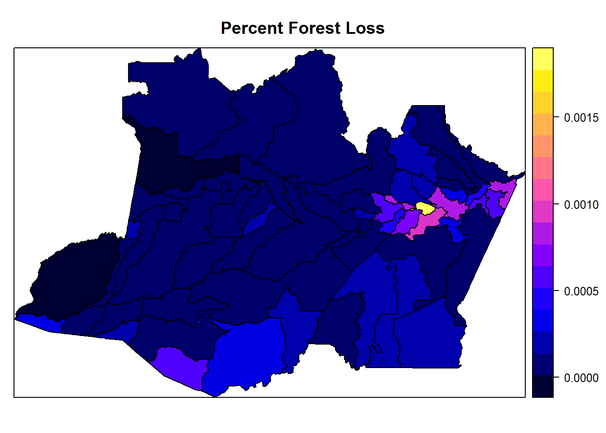
spplot(AmazonasShape, "avg.rainfall", main = "Average Monthly Rainfall")
spplot(AmazonasShape, "mean_elevation", main = "Mean Elevation")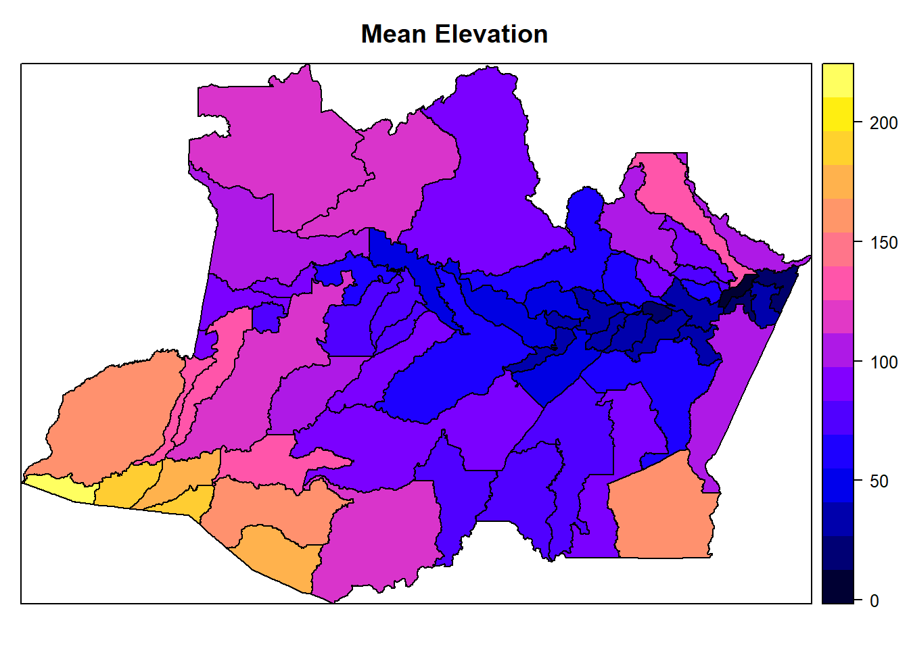
Fit a model without autocorrelation
YF.glm = glm(YFVoccurence ~ percent_forest_loss + percent_forest +
mean_elevation + population + avg.rainfall,
family = binomial(link = "probit"),
data = YFcases)## Warning: glm.fit: fitted probabilities numerically 0 or 1 occurredsummary(YF.glm)##
## Call:
## glm(formula = YFVoccurence ~ percent_forest_loss + percent_forest +
## mean_elevation + population + avg.rainfall, family = binomial(link = "probit"),
## data = YFcases)
##
## Deviance Residuals:
## Min 1Q Median 3Q Max
## -1.17020 -0.15196 -0.00057 0.00000 2.60823
##
## Coefficients:
## Estimate Std. Error z value Pr(>|z|)
## (Intercept) 7.587e+00 7.858e+00 0.965 0.33433
## percent_forest_loss -5.164e+03 2.627e+03 -1.966 0.04928 *
## percent_forest 1.464e-01 6.511e-02 2.249 0.02454 *
## mean_elevation -8.712e-02 3.360e-02 -2.593 0.00951 **
## population 5.079e-05 1.904e-05 2.667 0.00765 **
## avg.rainfall -8.247e-02 4.672e-02 -1.765 0.07754 .
## ---
## Signif. codes: 0 '***' 0.001 '**' 0.01 '*' 0.05 '.' 0.1 ' ' 1
##
## (Dispersion parameter for binomial family taken to be 1)
##
## Null deviance: 54.784 on 61 degrees of freedom
## Residual deviance: 21.587 on 56 degrees of freedom
## AIC: 33.587
##
## Number of Fisher Scoring iterations: 11drop1(YF.glm)## Warning: glm.fit: fitted probabilities numerically 0 or 1 occurred
## Warning: glm.fit: fitted probabilities numerically 0 or 1 occurred
## Warning: glm.fit: fitted probabilities numerically 0 or 1 occurred
## Warning: glm.fit: fitted probabilities numerically 0 or 1 occurred## Single term deletions
##
## Model:
## YFVoccurence ~ percent_forest_loss + percent_forest + mean_elevation +
## population + avg.rainfall
## Df Deviance AIC
## <none> 21.587 33.587
## percent_forest_loss 1 27.059 37.059
## percent_forest 1 28.942 38.942
## mean_elevation 1 42.743 52.743
## population 1 38.647 48.647
## avg.rainfall 1 25.853 35.853Detect spatial correlation
library(gstat)## Warning: package 'gstat' was built under R version 3.3.3temp_data = data.frame(error = rstandard(YF.glm), x = YFcases$x, y = YFcases$y)
coordinates(temp_data) <- c("x","y")
bubble(temp_data, "error", col = c("black","grey"),
main = "Residuals", xlab = "X-coordinates", ylab = "Y-coordinates")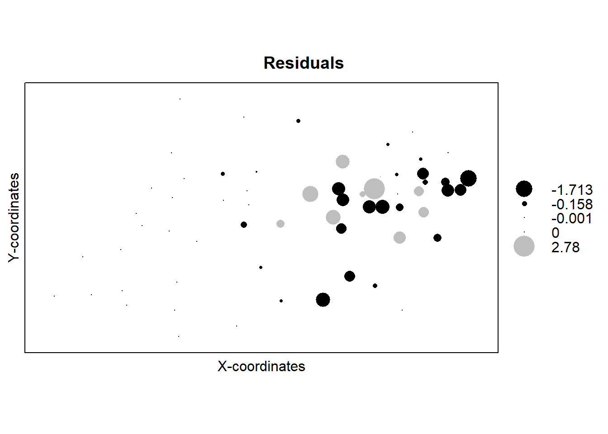
plot(temp_data$error ~ temp_data$x, xlab = "X-coordinates", ylab = "Errors")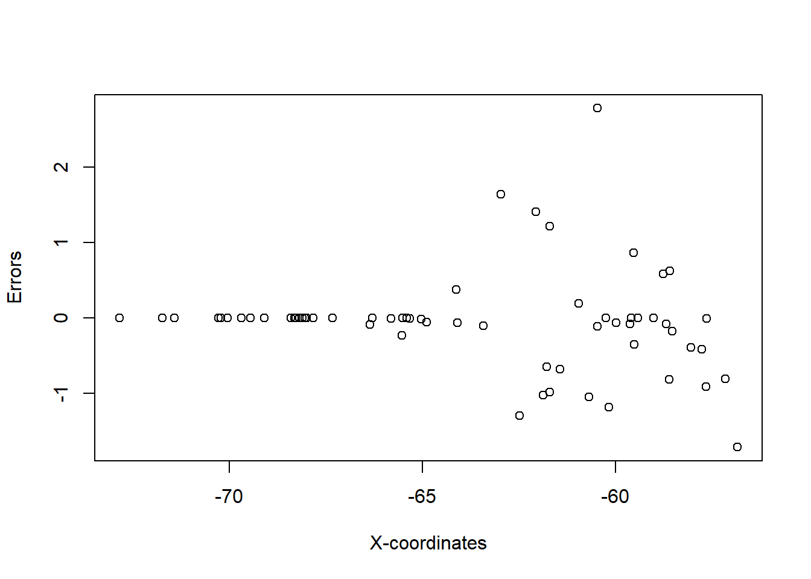
plot(temp_data$error ~ temp_data$y, xlab = "Y-coordinates", ylab = "Errors")
plot(variogram(error ~ 1, temp_data))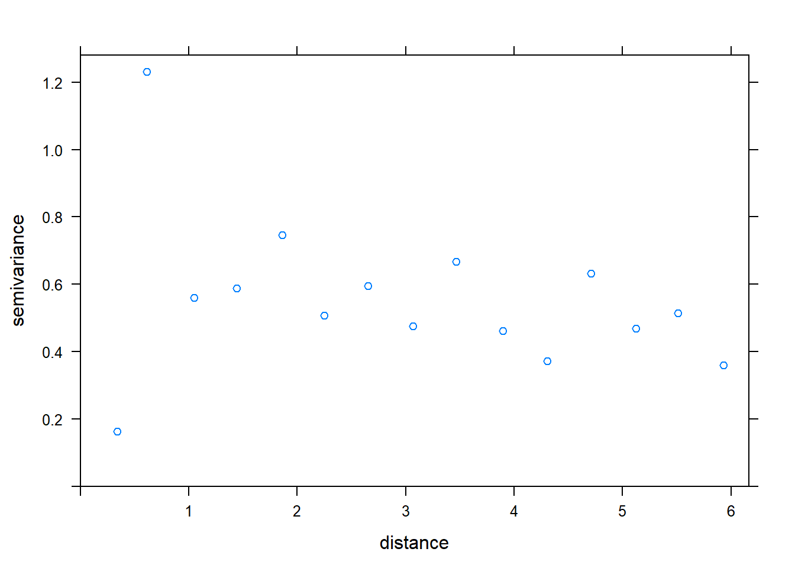
plot(variogram(error ~ 1, temp_data, alpha = c(0, 45, 90, 135)))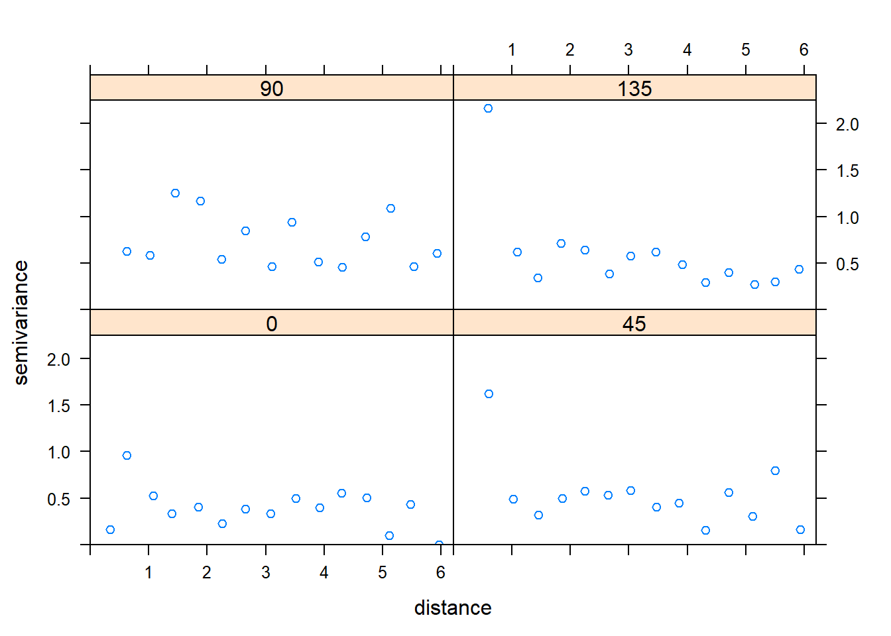
Construct models with correlation structure
f1 = YFVoccurence ~ percent_forest_loss + percent_forest +
mean_elevation + population + avg.rainfall
model1 <- glm(f1, family = binomial(link = "logit"), correlation = corSpher(form =~ x + y, nugget = TRUE), data = YFcases)The error from this code is Error in corSpher(form = ~x + y, nugget = TRUE) : could not find function "corSpher". This error message occurs because you can’t use a spatial correlation structure with glm. As laid out in Zuur et al., correlation structure can be specified in gls, gamm, and lme, however gls and lme do not allow for specifying that the data are binomial.
Correlation structure using glmmPQL
F. Dormann, C., M. McPherson, J., B. Araújo, M., Bivand, R., Bolliger, J., Carl, G., G. Davies, R., Hirzel, A., Jetz, W., Daniel Kissling, W., Kühn, I., Ohlemüller, R., R. Peres-Neto, P., Reineking, B., Schröder, B., M. Schurr, F. and Wilson, R. (2007), Methods to account for spatial autocorrelation in the analysis of species distributional data: a review. Ecography, 30: 609–628. doi:10.1111/j.2007.0906-7590.05171.x
The supplementary material of this paper suggests using the Generalized Linear Mixed Model function glmmPQL in the package MASS for binary data with a correlation structure. They note that this is a “cheat”, as their suggestions is to add a group variable that is the same for all elements of the dataset. Then, glmmPQL can be run on the data even if random effects are not desired (glmmPQL requires random effect be specified).
library(MASS)## Warning: package 'MASS' was built under R version 3.3.3##
## Attaching package: 'MASS'## The following object is masked from 'package:dplyr':
##
## selectlibrary(nlme)## Warning: package 'nlme' was built under R version 3.3.3##
## Attaching package: 'nlme'## The following object is masked from 'package:dplyr':
##
## collapseYFcases <- cbind(YFcases, group = factor(rep("a",nrow(YFcases))))
# GLMM fits ----------------------
f1 = YFVoccurence ~ percent_forest_loss + percent_forest +
mean_elevation + population + avg.rainfall
model.base<- glmmPQL(f1, random=~1|group,
data=YFcases,
family=binomial(link = "probit"))## Warning: glm.fit: fitted probabilities numerically 0 or 1 occurred## iteration 1summary(model.base)## Linear mixed-effects model fit by maximum likelihood
## Data: YFcases
## AIC BIC logLik
## NA NA NA
##
## Random effects:
## Formula: ~1 | group
## (Intercept) Residual
## StdDev: 8.775764e-05 0.7932916
##
## Variance function:
## Structure: fixed weights
## Formula: ~invwt
## Fixed effects: YFVoccurence ~ percent_forest_loss + percent_forest + mean_elevation + population + avg.rainfall
## Value Std.Error DF t-value p-value
## (Intercept) 7.587 6.5593 56 1.156705 0.2523
## percent_forest_loss -5164.525 2192.4106 56 -2.355638 0.0220
## percent_forest 0.146 0.0543 56 2.693935 0.0093
## mean_elevation -0.087 0.0280 56 -3.106704 0.0030
## population 0.000 0.0000 56 3.195651 0.0023
## avg.rainfall -0.082 0.0390 56 -2.114783 0.0389
## Correlation:
## (Intr) prcn__ prcnt_ mn_lvt popltn
## percent_forest_loss -0.802
## percent_forest 0.275 -0.397
## mean_elevation -0.478 0.702 -0.740
## population 0.264 -0.574 0.706 -0.695
## avg.rainfall -0.857 0.736 -0.716 0.657 -0.545
##
## Standardized Within-Group Residuals:
## Min Q1 Med Q3 Max
## -1.249898e+00 -1.358353e-01 -5.107621e-04 -1.877423e-08 6.789002e+00
##
## Number of Observations: 62
## Number of Groups: 1plot(Variogram(model.base), main = "No Correlation Structure")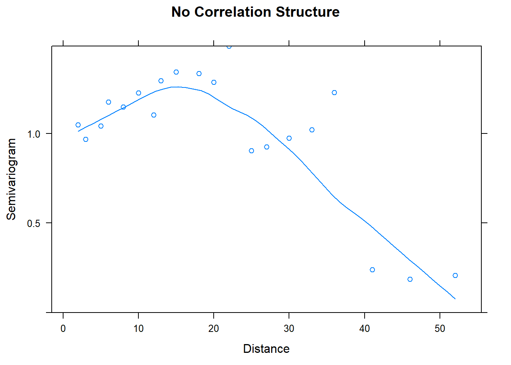
#exponential correlation structure
model.1 <- glmmPQL(f1, random=~1|group,
data=YFcases,
correlation=corExp(form=~x+y, nugget = T),
family=binomial(link = "probit"))## Warning: glm.fit: fitted probabilities numerically 0 or 1 occurred## iteration 1## iteration 2summary(model.1)## Linear mixed-effects model fit by maximum likelihood
## Data: YFcases
## AIC BIC logLik
## NA NA NA
##
## Random effects:
## Formula: ~1 | group
## (Intercept) Residual
## StdDev: 3.358151e-12 0.778228
##
## Correlation Structure: Exponential spatial correlation
## Formula: ~x + y | group
## Parameter estimate(s):
## range nugget
## 1.270843e-01 1.605511e-06
## Variance function:
## Structure: fixed weights
## Formula: ~invwt
## Fixed effects: YFVoccurence ~ percent_forest_loss + percent_forest + mean_elevation + population + avg.rainfall
## Value Std.Error DF t-value p-value
## (Intercept) 7.859 6.4297 56 1.222266 0.2267
## percent_forest_loss -5183.117 2133.1229 56 -2.429826 0.0183
## percent_forest 0.144 0.0524 56 2.755218 0.0079
## mean_elevation -0.087 0.0272 56 -3.187681 0.0023
## population 0.000 0.0000 56 3.257554 0.0019
## avg.rainfall -0.083 0.0381 56 -2.170394 0.0342
## Correlation:
## (Intr) prcn__ prcnt_ mn_lvt popltn
## percent_forest_loss -0.800
## percent_forest 0.284 -0.400
## mean_elevation -0.478 0.700 -0.738
## population 0.262 -0.571 0.699 -0.687
## avg.rainfall -0.862 0.735 -0.715 0.651 -0.536
##
## Standardized Within-Group Residuals:
## Min Q1 Med Q3 Max
## -1.265284e+00 -1.471794e-01 -5.163779e-04 -1.873033e-08 6.746666e+00
##
## Number of Observations: 62
## Number of Groups: 1plot(Variogram(model.1), main = "Exponential Correlation")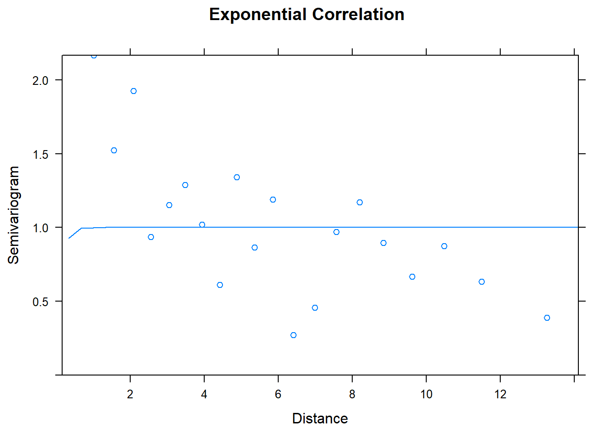
#Gaussian correlation structure
model.2 <- glmmPQL(f1, random=~1|group,
data=YFcases,
correlation=corGaus(form=~x+y, nugget = T),
family=binomial(link = "probit"))## Warning: glm.fit: fitted probabilities numerically 0 or 1 occurred## iteration 1
## iteration 2## iteration 3## iteration 4summary(model.2)## Linear mixed-effects model fit by maximum likelihood
## Data: YFcases
## AIC BIC logLik
## NA NA NA
##
## Random effects:
## Formula: ~1 | group
## (Intercept) Residual
## StdDev: 7.416491e-05 0.7442327
##
## Correlation Structure: Gaussian spatial correlation
## Formula: ~x + y | group
## Parameter estimate(s):
## range nugget
## 3.105129e-01 4.132748e-09
## Variance function:
## Structure: fixed weights
## Formula: ~invwt
## Fixed effects: YFVoccurence ~ percent_forest_loss + percent_forest + mean_elevation + population + avg.rainfall
## Value Std.Error DF t-value p-value
## (Intercept) 8.429 6.0701 56 1.388607 0.1705
## percent_forest_loss -5168.350 1977.5224 56 -2.613548 0.0115
## percent_forest 0.138 0.0468 56 2.955781 0.0046
## mean_elevation -0.086 0.0253 56 -3.382648 0.0013
## population 0.000 0.0000 56 3.406250 0.0012
## avg.rainfall -0.083 0.0358 56 -2.310068 0.0246
## Correlation:
## (Intr) prcn__ prcnt_ mn_lvt popltn
## percent_forest_loss -0.792
## percent_forest 0.320 -0.425
## mean_elevation -0.480 0.700 -0.736
## population 0.254 -0.568 0.676 -0.659
## avg.rainfall -0.880 0.736 -0.715 0.632 -0.503
##
## Standardized Within-Group Residuals:
## Min Q1 Med Q3 Max
## -1.292416e+00 -1.644675e-01 -6.255974e-04 -1.983160e-08 6.636181e+00
##
## Number of Observations: 62
## Number of Groups: 1plot(Variogram(model.2), main = "Gaussian Correlation")
#spherical correlation structure
model.3 <- glmmPQL(f1, random=~1|group,
data=YFcases,
correlation=corSpher(form=~x+y, nugget = T),
family=binomial(link = "probit"))## Warning: glm.fit: fitted probabilities numerically 0 or 1 occurred## iteration 1## iteration 2## iteration 3## iteration 4summary(model.3)## Linear mixed-effects model fit by maximum likelihood
## Data: YFcases
## AIC BIC logLik
## NA NA NA
##
## Random effects:
## Formula: ~1 | group
## (Intercept) Residual
## StdDev: 4.583454e-05 0.7389688
##
## Correlation Structure: Spherical spatial correlation
## Formula: ~x + y | group
## Parameter estimate(s):
## range nugget
## 6.692568e-01 1.707727e-07
## Variance function:
## Structure: fixed weights
## Formula: ~invwt
## Fixed effects: YFVoccurence ~ percent_forest_loss + percent_forest + mean_elevation + population + avg.rainfall
## Value Std.Error DF t-value p-value
## (Intercept) 8.342 6.0094 56 1.388236 0.1706
## percent_forest_loss -5135.323 1952.2119 56 -2.630515 0.0110
## percent_forest 0.139 0.0463 56 2.993038 0.0041
## mean_elevation -0.086 0.0250 56 -3.417810 0.0012
## population 0.000 0.0000 56 3.433671 0.0011
## avg.rainfall -0.082 0.0354 56 -2.326652 0.0236
## Correlation:
## (Intr) prcn__ prcnt_ mn_lvt popltn
## percent_forest_loss -0.791
## percent_forest 0.317 -0.423
## mean_elevation -0.477 0.698 -0.735
## population 0.250 -0.564 0.673 -0.655
## avg.rainfall -0.880 0.734 -0.713 0.629 -0.499
##
## Standardized Within-Group Residuals:
## Min Q1 Med Q3 Max
## -1.298376e+00 -1.658197e-01 -6.539563e-04 -2.002856e-08 6.620939e+00
##
## Number of Observations: 62
## Number of Groups: 1plot(Variogram(model.3), main = "Spherical Correlation")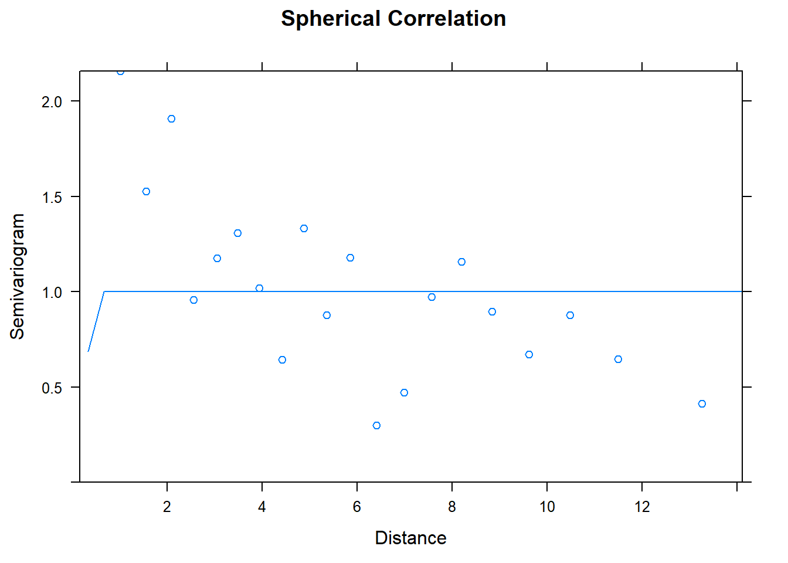
#rational quadratic correlation structure
model.4 <- glmmPQL(f1, random=~1|group,
data=YFcases,
correlation=corRatio(form=~x+y, nugget = T),
family=binomial(link = "probit"))## Warning: glm.fit: fitted probabilities numerically 0 or 1 occurred## iteration 1summary(model.4)## Linear mixed-effects model fit by maximum likelihood
## Data: YFcases
## AIC BIC logLik
## NA NA NA
##
## Random effects:
## Formula: ~1 | group
## (Intercept) Residual
## StdDev: 8.302191e-05 0.7932916
##
## Correlation Structure: Rational quadratic spatial correlation
## Formula: ~x + y | group
## Parameter estimate(s):
## range nugget
## 1.321305e-16 4.333688e-01
## Variance function:
## Structure: fixed weights
## Formula: ~invwt
## Fixed effects: YFVoccurence ~ percent_forest_loss + percent_forest + mean_elevation + population + avg.rainfall
## Value Std.Error DF t-value p-value
## (Intercept) 7.587 6.5593 56 1.156705 0.2523
## percent_forest_loss -5164.525 2192.4106 56 -2.355638 0.0220
## percent_forest 0.146 0.0543 56 2.693935 0.0093
## mean_elevation -0.087 0.0280 56 -3.106704 0.0030
## population 0.000 0.0000 56 3.195651 0.0023
## avg.rainfall -0.082 0.0390 56 -2.114783 0.0389
## Correlation:
## (Intr) prcn__ prcnt_ mn_lvt popltn
## percent_forest_loss -0.802
## percent_forest 0.275 -0.397
## mean_elevation -0.478 0.702 -0.740
## population 0.264 -0.574 0.706 -0.695
## avg.rainfall -0.857 0.736 -0.716 0.657 -0.545
##
## Standardized Within-Group Residuals:
## Min Q1 Med Q3 Max
## -1.249898e+00 -1.358353e-01 -5.107621e-04 -1.877423e-08 6.789002e+00
##
## Number of Observations: 62
## Number of Groups: 1plot(Variogram(model.4), main = "Rational Quadratic Correlation")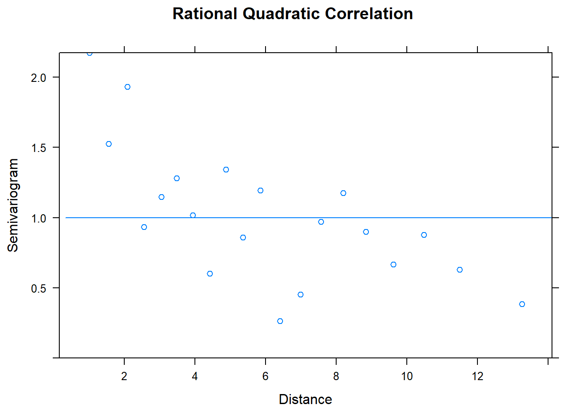
Correlation structure using gamm
Alternatively, if you think you need a smoother, you can you gamm. Here, we suppose that percent forest has a nonlinear effect on the chance of yellow fever occurence.
library(mgcv)
f2 = YFVoccurence ~ percent_forest_loss + s(percent_forest) +
mean_elevation + population + avg.rainfall
model2.base <- gamm(f2, method = "REML",
data=YFcases,
family=binomial(link = "probit"))##
## Maximum number of PQL iterations: 20#exponential correlation structure
model2.1 <- gamm(f2, method = "REML",
data=YFcases,
correlation=corExp(form=~x+y, nugget = T),
family=binomial(link = "probit"))##
## Maximum number of PQL iterations: 20#Gaussian correlation structure
model2.2 <- gamm(f2, method = "REML",
data=YFcases,
correlation=corGaus(form=~x+y, nugget = T),
family=binomial(link = "probit"))##
## Maximum number of PQL iterations: 20#rational quadratic correlation structure
model2.4 <- gamm(f2, method = "REML",
data=YFcases,
correlation=corRatio(form=~x+y, nugget = T),
family=binomial(link = "probit"))##
## Maximum number of PQL iterations: 20AIC(model2.base$lme, model2.1$lme, model2.2$lme, model2.4$lme)## df AIC
## model2.base$lme 7 941.7172
## model2.1$lme 9 937.7682
## model2.2$lme 9 913.4200
## model2.4$lme 9 945.7172One benefit of using gamm is that you have AIC values to compare the model fits while glmmPQL does not calculate AIC values.
Discussion Questions
How should the variogram be interpreted if it is not a uniformly increasing band of points?
What data analyses do you foresee needing correlation structure for? Will the spatial/temportal dependence be induced by extrinsic and/or intrisic factors?
How do spatial and temporal correlation structures differ?
How can we detect when spatial/temportal correlation is caused by a missing covariate?